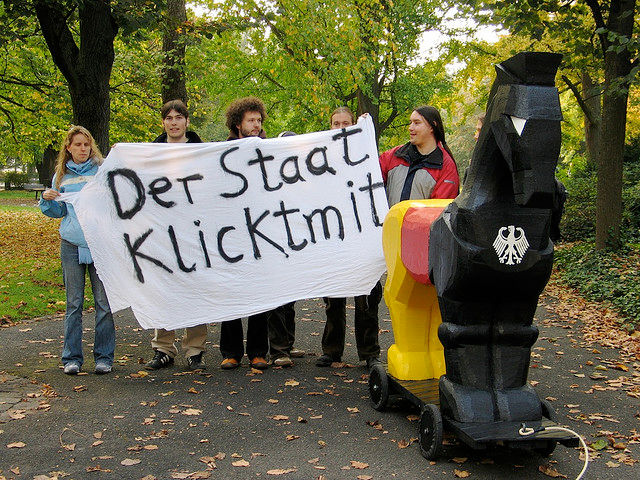
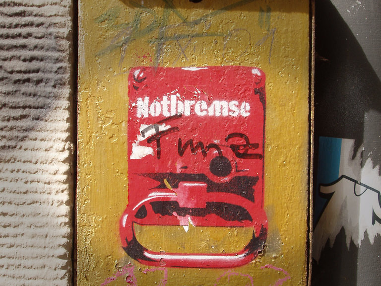

Stefan Schlott
Juni 2012
Risiken und
Nebenwirkungen





 ? →
? →
 →
→


Quelle: Augsburger Allgemeine / Süddeutsche
About Me / Account End Date / Account Status History / Address / Alternate Name / Applications / Chat / Checkins / Connections / Credit Cards / Currency / Current City / Date of Birth / Education / E-Mails / Events / Family / Favourite Quotes / Friend Requests / Friends / Gender / Groups / Hometown / Last Location / Linked Accounts / Locale / Logins / Machines / Messages / Minifeed / Name / Name Changes / Networks / Notes / Notification Settings / Notifications / Password / Phone Numbers / Photos / Physical Tokens / Pokes / Political Views / Privacy Settings / Profile Blurb / Realtime Activities / Recent Activities / Registration Date / Relationship / Religious Views / Removed Friends / Screen Names / Shares / Status Updates / Vanity / Wallposts / Website / Work / Wall Posts on others' walls / Videos / Likes on Site / Cookie-related information such a browser information / Searches within Facebook while logged in / News Feed Settings / Pages views while logged in / Facial Recognition / Interaction with Advertisement / Conversation Tracking / Indication of Relationships / Removed Tags / Like Button Tracking / Friend Finder / Outcomes of Processes, Matching / Data from Syncronisation / Details on Relationships to Friends / Ractions and Interaction with Wall Posts / Apps Admin / Friends’ E-Mail address / Likes off Site / Pages Admin / Profile Status Change / Subscribers / Subscriptions / Unlike / Verified Mobile Numbers
Quelle: Google, ReadWriteWeb
Man gibt nicht nur Daten über sich, sondern auch über seine Freunde preis

Disclaimer: Möglicherweise unbequemer als Facebook...
Erste Frage: Welche Funktionen sollen ersetzt werden?
http://stefan.ploing.de/2012-06-15-chaos-macht-schule-geislingen

This work is licensed under a Creative Commons Attribution-NonCommercial-ShareAlike 3.0 Unported License.

{kind=link}
{kind=link}